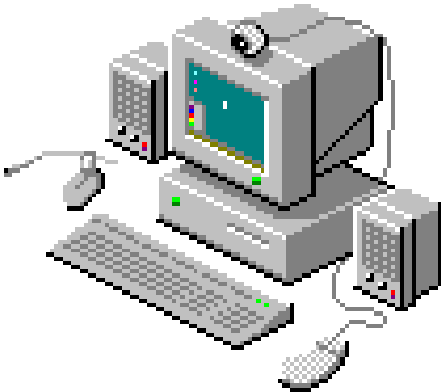

Marçal

Hello
Choose Your Player
A physicist's favourite approximation — and a perfectly reasonable thing to do.
Click the button and watch physics take over.
What is this?
"Assume a spherical cow" is a beloved joke about how physicists simplify problems to make the maths tractable. The punchline: a farmer asks a physicist to help increase milk yield. The physicist thinks hard, then begins — "Consider a spherical cow of uniform density, in a vacuum…"
It gently mocks the way theoretical physics strips away messy reality in favour of elegant, solvable models. In practice though, these approximations are extraordinarily powerful. Much of modern physics was built on them.
Things I enjoy doing

Programming
I started learning to code when I was 10 years old because I wanted to make my own robots. Over time, I realized how powerful programming is. Now it's something I genuinely enjoy!
Reading
I have always found peace in reading, although some books can be mind-boggling. From Greek to more modern literature, books are a source of wisdom for all of us. "A reader lives a thousand lives before he dies... The man who never reads lives only one." (George R. R. Martin)